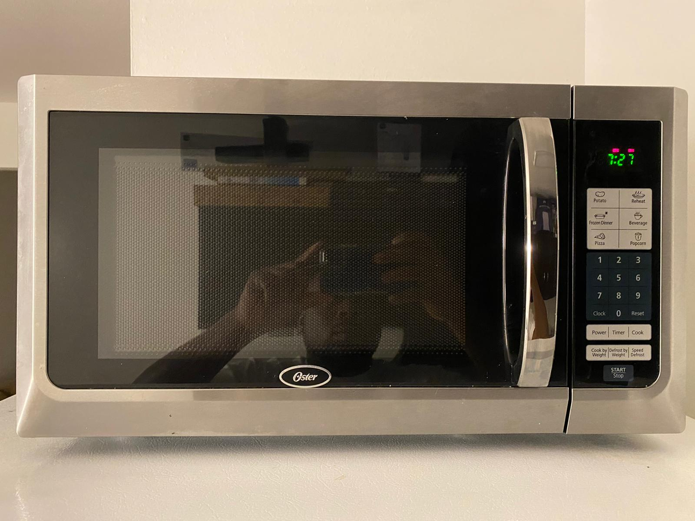
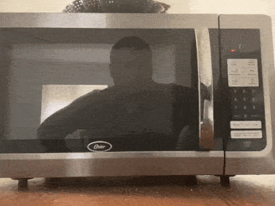
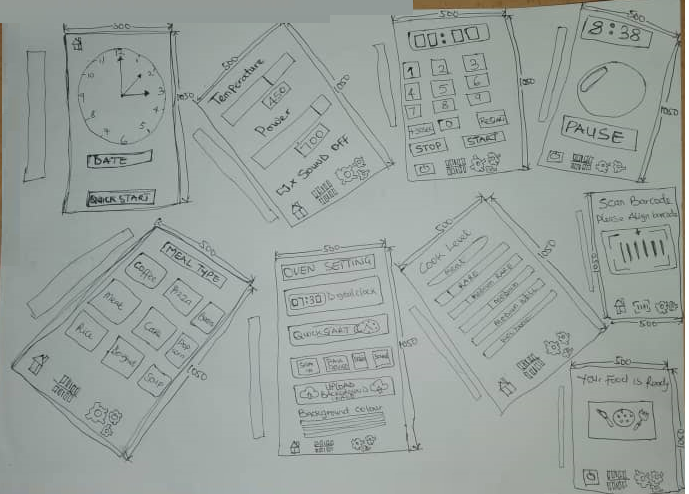

Microwave oven is an electric oven that heats and cook’s food and other
items by exposing them to electromagnetic radiation in the microwave
frequency range. Microwave ovens among all other familiar devices in a
house could be said to have been laggard in usability yet used regularly
to rapidly heat foods. Microwave usability is often hindered by users
ability to understand the interface, they are not standardized and unlike
interfaces on other devices that use similar icons to achieve some
significant level of interbreeding.
Here using a sample of a microwave, we discuss know uses of
Microwaves and their interfaces.


Issues With Current Microwave Oven Design
The Oster Microwave shown above is an example of a fairly recent design of
a microwave, taking a look at its interface we can point out some
challenges a user might encounter using the microwave.
English Needed - One needs to be able to read English to
understand how to use a good number of the buttons as there are no
visual ques.
Insufficient Display - Difficult exist in differentiating
Microwave Time from Clock time. The timer and time are displayed
similarly hence with a quick glance one cannot know if the microwave is
in operation.
Dynamic Adjustment not Supported - You cannot increase or reduce
the timer once started, You stop and reset the microwave to increase or
reduce the Microwave time
Insufficient Feedback - They lack of clear feedback except for
the time/timer display and beep sound making using this microwave a
challenge for someone who is visually impaired.
Limited Menu Options - To avoid clustering, several buttons
options that otherwise would have been useful have been removed. Early
Models had more Programs.
Difficult Understanding Buttons - For example pressing the
potatoes button requires further input that isn’t clear to understand,
the further input could be the number, weight or size of potatoes or
something else.
Microwave Oven Uses
Modern microwave ovens don't just use emitted microwaves bouncing around
the microwave and heating items by directly coming into contact with them,
the are supported by a fan that causes the air movement that can heat up
the entire oven, thus these microwave ovens can cook in different modes
offering functions like heating, cooking, grilling, defrosting, baking,
and roasting.
Microwaves oven are commomly used to reheat already processed meal but
here we list some of its more common and rarely uses
Common Uses
Reheating Food - This is the most common use of microwave for
most people.
Cooking -While most people cook using other means, Microwaves
can and are being used to Cook.
Baking- Another area witnessing increased use of microwave oven
is the use in baking items such as cake and pizza.
Rare Uses
Disinfect Items - Microwaves have been used to disinfect items.
one way involves soaking such items in some lemon juice and heat them in
a microwave for a minute, it will both disinfect as well as deodorize
the items.
Heating Beauty Products - Some beauty product require heating and
using microwave to heat them is becoming more common.
Speeding Up Production - People have discovered of several ways
using microwaves to speed up the process of doing certain things like
reducing the time to Proofing yeast from an hour to 15 mins, Roasting
GARLIC IN 8 minutes rather than 45 minutes.
Improving Up Production - People have also discovered of
several ways using microwaves to improve output for example microwaving
cirtus fruits make them juicier.
Factors to consider in Interface Design
Having listed some of the uses of a microwave, we answer the following
questions using the microwave interface shown above.
Does the interface make doing those common things easier? - NO.
They easiest way to reheat an item is to simply touch a single button
and the microwave would begin heating but this isn’t supported on this
interface. They inability to also increase or reduce cooking time while
the microwave is in progress does not help matters also.
Think about how the user interacts with the microwave. What is the
common sequence of actions? -
Reheating is the most common use of this microwave, and this is done by
setting a time using the number pad and hitting the start button. Once
the time is elapsed the item being heated is removed from the microwave.
How does the microwave support the user figure out how to make it
work? - By having limited number of buttons, using simple and precise English
and adding some images, figuring out how to use the microwave for some
functions isn’t tasking, but for some other listed functions figuring
out how to use them could be a challenge.
How does the microwave provide feedback to the user? -
Microwaves have been used to disinfect items. one way involves soaking
such items in some lemon juice and heat them in a microwave for a
minute, it will both disinfect as well as deodorize the items.
What are some common mistakes you can make with this current design?
-
Common mistake I make included setting the wrong amount of time and
wanting to increase or reduce it while the microwave is in operation.
Forgetting to hit the start button after selecting time is another
mistake, I notice first time users make.
Suggest the improvements to make on the control interface -
Adding easily recognizable Visual Cues.
Different display looks for different states.
More feedback to help users use more complicated functions.
Adding an option to scan bar codes and automatically perform
required settings.
Adding the option of providing sound feedback.
Making it easy to increase or reduce time even while in operation.
Allow easy transition to different states.
Sketch of proposed solution?-

Justify design decisions? -
Several Buttons used in this interface are easily recognizable hence
a non-English user can use the microwave.
The ability to turn on and off sound that inform users of actions
would greatly help a visually impaired person but not offend someone
that wants silence.
With different designs at different states and a clear state when in
operations, its easy to recognize the current state of the machine.
Its Easy to have several functions on the microwave without
Clustering.
Users can modify the background their desired look hence making it
more friendly.
Packaged food items can have their barcoded easily scanned.
Pressing a single buttons starts the microwave hence very easy to
use.